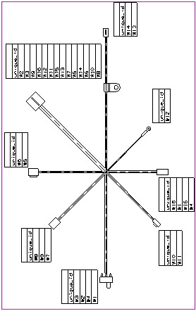
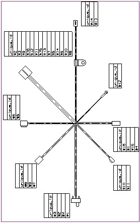

Add Pin Listings
-
Use the Pin Listing
 command to create pin listing tables for each of the connectors and switch on the formboard.
command to create pin listing tables for each of the connectors and switch on the formboard.

Use the Pin Listing  command to create pin listing tables for each of the connectors and switch on the formboard.
command to create pin listing tables for each of the connectors and switch on the formboard.
